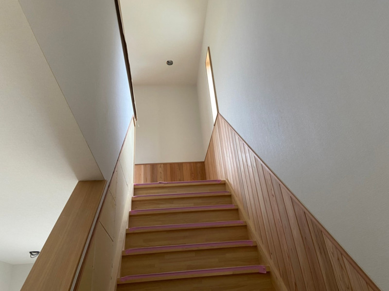

京都府F様邸
工程から完成まで、住まいづくりの流れをまとめた戸建住宅の施工事例。
詳しく見る →Story
WORKS
住まいの改修から外装・防水、新築・解体まで。
OKSが手がけた施工事例をご紹介します。
 戸建
戸建
工程から完成まで、住まいづくりの流れをまとめた戸建住宅の施工事例。
詳しく見る → マンション
マンション
キッチン・浴室・洗面・トイレまで、住まい全体を整えたリフォーム。
詳しく見る → 戸建
戸建
LDK・水回り・和室などをまとめて改修した住宅リフォーム。
詳しく見る → 水回り
水回り
既存設備の撤去から新しいキッチンの設置までを分かりやすく紹介。
詳しく見る → 外壁・屋根
外壁・屋根
既存屋根の状態を確認し、防水性能を高める改修を行った事例。
詳しく見る → 外壁・屋根
外壁・屋根
外観の印象を整えながら、建物を守るための外壁塗装を実施。
詳しく見る →
新築解体、基礎、建方、内装、完成までを一つのストーリーとして追える事例。
詳しく見る → 解体
解体
建物の解体から搬出、整地まで、安全性に配慮して進めた解体工事。
詳しく見る → 戸建
戸建
既存の階段を活かしながら、使いやすさと見た目を整えた改修事例。
詳しく見る →このカテゴリの施工事例は現在整理中です。
CONTACT